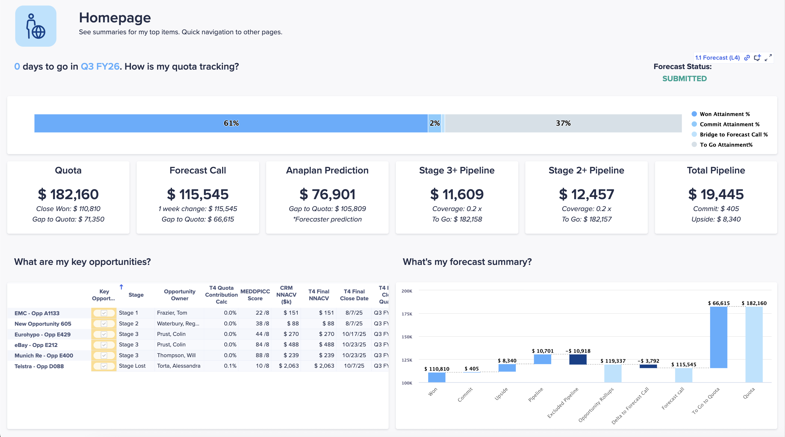

Sales Forecasting Application Review
The 6 top-level pages of the app, what each does, and how their sub-pages fit together
Sales Forecasting is a connected analytics workspace that gives sales teams a complete, real-time view of their revenue — from individual deals and pipeline health to team forecasts, account growth opportunities, and performance trends. The app consolidates pipeline management, revenue prediction, account intelligence, and team performance tracking in a single interface, so users can make informed decisions based on actual numbers rather than assumptions, identify pipeline gaps early, submit reliable forecasts, surface accounts with growth potential, and understand what's actually driving team performance.
The application supports three user types — each sees a subset of the data and tools below based on their assigned role and stage in the sales cycle:
- Sales representatives — manage deals and pipeline activities
- Sales managers — align and review team forecasts
- RevOps leaders — configure processes and monitor accuracy
The app is organized into 6 top-level pages. Each is a "hub" that either renders its own dashboard or routes the user to a small set of focused sub-pages. The rest of this walkthrough goes hub-by-hub, embeds the screenshots we have, and lists what's actually on each surface.
| Top-level page | What it covers |
|---|---|
| Homepage | Track sales performance, including pipeline health and revenue forecasting. |
| Sales Forecast | Review, adjust, and submit forecasts with full visibility into quota performance, team rollups, and pipeline composition. Compare manual inputs against AI-powered Anaplan predictions to sharpen forecast accuracy over time. |
| Sales Pipeline | Monitor current pipeline health and coverage, track new-deal-creation against generation targets, fix data quality issues before they impact forecasts, and analyze how deals have moved over historical periods. |
| Sales Accounts | Get a complete view of each strategic account — ARR, ACV, product adoption, white space, and engagement activity — to identify upsell and cross-sell opportunities. |
| Sales Insights | Understand the reasons behind your sales results. Analyze six rolling quarters of business trends to find patterns and make decisions. Compare team performance across key metrics to guide coaching and development. |
| Sales Overlays | Review sales performance and activity related to your channel partners and products — track partner-sourced revenue, analyze their pipeline, and manage their opportunities. |
1. Homepage
The Homepage is the command center for every persona. It tracks sales performance, including pipeline health and revenue forecasting, and shows where the user stands against quotas, how the pipeline is performing, what risks and opportunities exist, and the overall state of the business. Reps see their own data; managers see team rollup; RevOps see organization-wide.

The Homepage answers a curated set of questions, in order:
- How's my quota tracking? — Won Attainment %, Commit Attainment %, Bridge to Forecast Call %, To Be Attainment %
- What are my key opportunities? — the priority opportunities grid with stage, owner, MEDDPICC, NNACV, close date
- What's my forecast summary? — top-down forecast composition
- How did my pipeline change from last week? — week-over-week movement
- What are the pipelines that need to be cleaned up? — hygiene flags on stale or incomplete pipeline
- How am I tracking towards my target under different scenarios? — Worst / Most Likely / Best Case attainment
- How is my pipeline tracking? — stage-by-stage pipeline trend
- How is my team performing? — team-rollup performance (manager view)
- What is my pipeline generation momentum? — Pipeline Generation NNACV, Committed, Target, Count of Opportunities
- How are my accounts performing? — ARR & ACV Performance, Relevant Opportunities, White Space Inspection
- How is my business performing? — Business Trend across 6 Rolling Quarters, Win Rate %, ASP, Velocity, Conversion Rate, Days in Stage
When demoing the app, lead with this page. It answers 11 of the most common forecast and pipeline questions in a single scrollable surface — no other page of the app shows the audience this much at once.
2. Sales Forecast
Sales Forecast brings together everything needed to review, adjust, and submit the forecast — from individual deal-level data to team rollups and AI-powered predictions. It's a hub that routes the user to five focused sub-pages, each peeling back a different layer of the forecast.
| Sub-page | What it does |
|---|---|
| Forecast | Review quota performance, pipeline composition, and team rollups. Submit and adjust forecast numbers. |
| Opportunities | Manage every open deal in the pipeline. Update details, log notes, track close plans, and review product-level data. |
| Scenarios | Model different pipeline outcomes without changing the official forecast or CRM. Explore best-case and worst-case attainment side by side. |
| Anaplan Prediction | Compare the team's submitted forecast against Anaplan model predictions. Understand forecast quality and track variance over time. (See AI Prediction Lab.) |
| Anaplan Prediction — Sales Ops | Evaluate multiple forecasting algorithms, compare their historical accuracy, and select the model applied across the organization. (See AI Prediction Lab.) |
Forecast (sub-page)
The Forecast sub-page is the top-level dashboard for the active forecast period. It brings together the user's own forecast numbers, the team's input, and the underlying pipeline data.
![Forecast dashboard for Q3 FY26 with the status banner Forecast to be Submitted, six KPI cards (Forecast Period Q3 FY26, Quota $18,400, Won $17,277 with 94% attainment, Forecast Call $13,475 with 73% attainment, Opportunity Rollups $17,930 with 97% attainment, Anaplan Prediction $16,000 with 87% attainment), a waterfall chart showing Won, Commit, Upside, Pipeline, Excluded Pipeline, Opportunity Rollups, Delta to Forecast Call, Forecast call, To Go to Quota, and Quota bars, and a monthly breakdown chart for Aug, Sep, Oct, and Q3 totals](../screenshots/sf-app/sf-app-forecast-dashboard.png)
Sections on this sub-page:
- Top-level view — Forecast Period, Quota, Won, Forecast Call, Opportunity Rollups, Anaplan Prediction with attainment %
- Waterfall Chart — Won → Commit → Upside → Pipeline → Excluded Pipeline → Opportunity Rollups → Delta to Forecast Call → Forecast Call → To Go to Quota → Quota
- Monthly Breakdown — forecast call broken out by month within the period
- Review Forecast Summary — comparison of My Forecast vs. My Team's Rollup vs. Variance from My Team across the same KPIs
- Enter My Forecast — month-by-month input grid (Quota, Won, Open In-Forecast Opportunities, Adjust Forecast Call, Forecast Call w/o Manager Adjustment, My Forecast Call, attainment %)
- Forecast Trend — weekly history of Won, Commit, Upside, Pipeline, Forecast Call, Forecast Attainment %, Quota, Day-1 Forecast
- Review My Team (manager view) — team rollup with Enter My Forecast control
- Adjust My Team's Forecast (manager view) — nudge an individual rep's number; the manager override takes precedence over the rep commit
- Key Forecast Trend — narrative trend of the team's submitted forecast over time
![Review Forecast Summary screen with the current quarter forecast status Forecast to be Submitted, top comparison grid showing My Forecast, My Team's Rollup, and Variance from My Team rows across Won, Commit, Upside, Pipeline, Opportunity Rollups, Forecast w/o Manager Adj, Forecast Call, Quota, Forecast Attainment %, S3+ Coverage to Target, and YoY growth% columns, bottom-left Enter My Forecast grid with month-by-month inputs, and bottom-right Forecast Trend chart with weekly lines from Week-1 through Week-13, plus a Submit Forecast button at the bottom](../screenshots/sf-app/sf-app-review-forecast-summary.png)
Every other page in the app exists to inform what gets typed into the Enter My Forecast grid. The weekly loop ends here: review the rollup, compare against the trend, adjust the call, hit Submit. When demoing, this is where the audience should feel "OK, that's the heartbeat."
Opportunities (sub-page)
The Opportunities sub-page is the shared workspace for reviewing, editing, and acting on the team's open deals. Reps manage their day-to-day pipeline here; managers use it to review team deals at scale.
Sections on this sub-page:
- Top-level view — count of open opportunities, total ACV, average deal size
- Opportunity Table Filters — Close Date, Forecast Category, Stage, and others
- Opportunity Details — the per-opp inspection panel: Account, Opportunity Name, Stage, Close Date, Amount, Forecast Category, Anaplan Prediction, Last Modified Date
- Deal Qualification (MEDDPICC) — Metrics, Economic Buyer, Decision Criteria, Decision Process, Paper Process, Identify Pain, Champion, Competition
- 3 Whys — Why do (we win), Why this (solution), Why now
- Comments — threaded notes
- Close Plan Tracking — milestones up to close date
- Product Details — product-line breakdown including ARR and ACV
- Close Plan Quick Chart — upcoming-milestone visualization
- Additional Insights — supplementary opportunity-level diagnostics
- Enter My Forecast + Adjust My Team's Forecast — same inputs as on the Forecast sub-page
Scenarios (sub-page)
Scenarios lets reps and managers explore what-if pipeline outcomes without changing the official forecast or CRM. The cascading rule — Worst ⊆ Most Likely ⊆ Best — keeps the three scenarios coherent so a rep can't accidentally include an opportunity in worst-case but exclude it from best-case.
![Scenario Planning decision flowchart titled Build out different scenarios to ensure you have multiple paths to close strong on your goals, starting from a Start node into Review Opportunity, branching into three parallel decisions — Include in Worst, Include in Most Likely, and Include in Best, each routing through an Override Forecast Category NNACV Close Date step then a Reviews its impact on Commit Upside Pipeline Total Pipeline and In-forecast Opps step, merging at a Take the best judgement node and ending at Update Opportunity Include Exclude and make best forecast call judgement](../screenshots/sf-app/sf-app-scenario-planning-flow.png)
Sections on this sub-page:
- Top-level view — scenario summary cards
- Scenario Waterfall Comparison — side-by-side Worst / Most Likely / Best Case
- Bridging Deals from Worst Case to Most Likely Case — the deals that move between the two scenarios
- Bridging Deals from Most Likely Case to Best Case — same view for the next step up
- Create Scenarios — flow to assign specific opportunities to a case
- Opportunity Filters — Close Date, Forecast Category, Stage
- Opportunity Details, MEDDPICC, 3 Whys, Comments, Deal Execution Tracking — same patterns as Opportunities
The Cross-System Flow Behind Submit
Behind the Submit Forecast button is a cross-system process tying Anaplan to Salesforce via the Data Orchestrator (ADO). The diagram below — from the SF Tech Overview V1.0 deck — shows how a forecast submission propagates: the rep reviews each opportunity, the manager reviews and adjusts (manager override takes precedence), and the final forecast call flows back through ADO to Salesforce as opportunity-level updates. Pipeline Analytics reads off the same opportunity-detail stream to compute weekly pipeline change.
![Forecast Call Submission Process architecture diagram showing three swimlanes: the top swimlane has the rep reviewing the forecast summary, submitting, the manager reviewing and adjusting, and the final forecast call with a note that Commit and Won are included by default and that Manager Forecast Call Override takes precedence; the middle swimlane shows the opportunity stream with AE reviews each opportunity, Included branching to Override Forecast Category NNACV Close Date, then Reviews its impact on Commit Upside Pipeline Total Pipeline and In-forecast Opps; the bottom-left Pipeline Analytics box covers Opportunity Details (Stage, Forecast Category, NNACV, Close Date), Weekly Snapshot at every hierarchy, Analyze pipeline changes over a defined period; the bottom-right Integration box shows the Salesforce-Anaplan ADO bridge — Updates Opportunity data via SFDC Connector and Writes back Opportunity data via SFDC Connector](../screenshots/sf-app/sf-app-forecast-call-process.png)
3. Sales Pipeline
Sales Pipeline gives a complete view of the pipeline — from current health and coverage gaps to generation rates, data quality, and historical trends. It's a hub for four focused sub-pages.
| Sub-page | What it does |
|---|---|
| Pipeline | Central hub for current pipeline health. Track progress against targets, identify coverage gaps, see which opportunities are contributing. |
| Pipeline Generation | Track how effectively the team is creating new opportunities. Monitor new-deal-creation rates against generation targets. |
| Hygiene | Pipeline quality control. Surface deals with missing quotes, incomplete MEDDPICC, or stalled stages before they affect forecast accuracy. |
| Pipeline Analytics | Look back at how the pipeline evolved over a defined period. Analyze deal movement, velocity, and funnel health. |
Pipeline (sub-page)
The central hub for pipeline health. Lets you track progress against quota and coverage targets.
- Pipeline Target Tracking — Won, Quota, Quota To Go, Weighted Pipeline (Stage 3+), Weighted Pipeline, Day 1 Quota, Coverage
- Pipeline Summary — pipeline by sales stage
- Pipeline Details — opportunities listed by Forecast Category, Decile Range, etc.
- Pipeline Aging in Stage — how much pipeline sits at various ages within each stage (Stage 0–4)
- Pipeline Conversion — stage-to-stage conversion
- In-Quarter Pipeline Moving Trend — value of pipeline at each stage through the quarter
- What's my team's pipeline? — team-rollup variant of the same view (manager / RevOps)
Pipeline Generation (sub-page)
Tracks how effectively the team is creating new opportunities against generation targets — the leading indicator for future-quarter forecast.
- Pipeline Generation Details — CQ Pipeline Generated NNACV (total new pipeline created this quarter), Day 1 Pipeline Generation NNACV, Meeting NNACV %
- What's my pipeline generation momentum? — Pipeline Target Tracking, Pipeline Generation Committed, Pipeline Generation Target, Count of Opportunities
- Pipeline Tracking by Source — Inbound, Outbound, Partner, Referral
- Meetings Tracking — number of meetings held by the sales team
- What's my team's momentum in pipeline generation? — manager rollup of the above
Hygiene (sub-page)
The pipeline quality control center. Identifies deals that need attention due to data quality issues, stagnation, or missing information. Each top KPI is defined in the in-app documentation:
- Stage 3+ Not in Commit — late-stage deals not in the commit forecast
- Stage 3+ Missing Quote — late-stage deals with no primary quote attached
- CQ Gaps in Early Stages — opps with a close date this quarter still in an early stage (a risk to the quarterly forecast)
- Stale Sales Stages — opps sitting in the same stage for more than 60 days
- Stuck Next Steps — deals whose next step hasn't been updated in 15 days
- Missing MEDDPICC — opps with incomplete MEDDPICC fields
The Hygiene Lists section underneath summarizes deal counts by selected hygiene metric — Total Hygiene Count, Stage 3+ Not in Commit, CQ Gaps in Early Stages, and others — and a drill-down table shows the individual deals requiring attention with the stage, owner, and why each was tagged.
Pipeline Analytics (sub-page)
Pipeline Analytics is the look-back view. Unlike the Pipeline page (current snapshot), this one shows how deals moved between two historical dates — the change waterfall that everyone wants on Monday morning.
![Pipeline Analytics screen with four quadrants — top-left waterfall titled How did my pipeline change from last week showing Starting Pipeline, Adjusted Up, Lost, Moved Out, Adjusted Down, Won, Ending Pipeline, and Pipeline Total Changes bars; top-right grid titled What are the pipelines that need to be cleaned up with reps and columns for Stage 3+ Not in Commit AE, CQ Opps in Early Stages AE, Stale Sales Stages, Stale Next Steps, Missing Primary Quote, Missing MEDDPICC, Missing 3 Whys, and Incomplete Close Plan; middle-left scenario attainment bars showing Worst Case Attainment%, Most Likely Case Attainment%, and Best Case Attainment%; bottom-right In-Quarter Pipeline Moving Trend line chart by week with Stage 1, 2, 3, 4 Pipeline, Won, Quota, and Forecast call lines](../screenshots/sf-app/sf-app-pipeline-analytics.png)
The filter set drives the entire page:
- Pick a quarter to analyze in Close Quarter
- Set the Pipeline Inspection Start / End Date — the historical window for the analysis
- Set Stage Filter + optional Use Exact Stage Match (uncheck to include the stage and higher)
- Set Forecast Category at start of the inspection window
- Optional toggles: Change from Last Week, Deals Included in Forecast Only
The Pipeline Change Categories waterfall summarizes: starting pipeline → additions (new deals or value increases) → losses (dropped deals or value decreases) → stage movements → ending pipeline. The Pipeline Details table provides the opportunity-level drill-down.
4. Sales Accounts
Sales Accounts gives a deep, data-driven view of all strategic accounts — revenue, product adoption, white space gaps, and engagement patterns. It surfaces a single sub-page (Accounts) that holds the full detail.
Accounts (sub-page)
The Accounts page is where reps and managers do account-by-account inspection. The page's sections, verbatim from the in-app docs:
- Account Overview — Account Owner, Existing Customer?, ARR, Account Match Size, Remaining Account Match Size, Open Opportunities Pipeline (Stage 3+), Renewal Opportunities (Stage 2+ Renewal), CQ Won & Pipeline, 5 Year Plan Won, Inbound Engagement Score, Outreach Activities
- ARR & ACV Performance + Account Direction — revenue trajectory
- Relevant Opportunities — Won / Open / Renewal cards
- Account Details — full account profile
- White Space Inspection — gaps in product adoption
- Product/Solution White Space — White Space ?, # of Business, ARR, # of Business Won, Remaining White Space, Inbound Engagement Score
- Product/Solution ARR Distribution — ARR by product across solution categories
- Account Inbound Engagement + Details — inbound activity log
- Outreach Activity — outbound activity log
- What product/solution sells well? — CRM Reach / CRM Pipeline / CRM Won across product categories
5. Sales Insights
Sales Insights is the strategic command center for understanding the reasons behind your results. Two sub-pages: Insights (the trend / win-loss / conversion analytics) and Leaderboard (the rep ranking and coaching surface).
Insights (sub-page)
The Insights page analyzes business trends over the past six rolling quarters to identify patterns. Sections:
- Business Performance Summary
- Business Trend 6 Rolling Quarters — # Won Deals, Won NNACV, Win Rate %, ASP, Velocity (contextual selector switches the metric and re-filters the page)
- Why We Win — won deals by primary winning reason: Product/Solution Fit, Sales Execution, Pricing/Value, Relationship/Trust, Brand/Credibility
- Why We Lose — lost deals by primary losing reason: Price/Budget, Competition, Product Gaps, Fit/Scope, Internal/Process, Timing/Priority
- Pipeline Conversion Insights
- Win Rate %, ASP, Velocity — by sales stage
- Conversion Rate to Next Stage — stage-to-stage advancement rate
- Days in Stage — where deals get stuck on average
- Deal Size Performance Insights — performance by deal-size bucket
- Pipeline Source Performance Insights — by source: AE / SDR / CS / Partner
- Opportunity Type Performance Insights — New Business, Add-on, Renewal, Services, Partner Opportunity, Renewal Expand, Supersede
- LOB Performance Insights — by line of business (Finance, Supply Chain, Workforce, Sales Performance)
Leaderboard (sub-page)
Leaderboard compares team performance across key metrics — for coaching and ranking. Two metric groups, each with Top-3 cards plus full bar charts:
- Performance Metrics Leaderboard — Quota Attainment % (Won + Commit vs. quota), Stage 1+ Win Rate %, Stage 3+ Pipeline
- Forecast & Pipeline Metrics Leaderboard — Forecast Accuracy % (lowest forecast error wins), Activities (calls, emails, meetings logged), Stage 2+ Pipe Gen
- Full Team Metrics — every individual's NNACV Quota, Quota to Go, Won, Commit, attainment percentages in one detailed table; regional rollup at the bottom for quarter-by-quarter trends
6. Sales Overlays
Sales Overlays is the analytic surface for specialist teams. Two sub-pages with parallel structure: Channels (partner-sourced performance) and Products (product-level performance). Both follow the same shape so they can be learned together.
Channels (sub-page)
The central hub for channel partner performance. Track partner-sourced revenue, analyze partner pipeline, and manage opportunities tied to channel relationships. A context selector in the top-right narrows the view to a region, channel, and time period.
- Channel Sales Overview — number of channel partners contributing in the period
- Channel Business Performance — selecting a channel updates this section: Target, Won, Win Rate, Target Attainment %, Current Pipeline, Total Pipeline
- Channel Summaries — two sub-tables: performance by sales stage (left) and by deal stage (right)
- Opportunity Table Filters + Opportunity Details + MEDDPICC + 3 Whys + Comments + Close Plan Tracking + Product Details + Close Plan Quick Chart — same opp-inspection pattern as the Opportunities sub-page
Products (sub-page)
Same shape, scoped to product-level performance instead of channel:
- Product Sales Overview — number of products contributing to revenue in the period
- Product Business Performance — selecting a product updates: Target, Won, Win Rate, Target Attainment %, Current Pipeline, Total Pipeline
- Product Summaries — two sub-tables: by sales stage and by deal stage
- Then the standard opp-inspection pattern (Filters, Details, MEDDPICC, 3 Whys, Comments, Close Plan Tracking, Product Details, Close Plan Quick Chart)
Under the Hood — the modeling backend
For partners and Sales Ops who need to extend or debug the app, the underlying Anaplan workspace shows the model dictionary. The Modules view lists every DAT:, SYS:, CALC:, and reporting module along with its functional area. This is the surface for extension and integration work, covered in Common Extensions.
![Anaplan workspace Modules view in the Template Sales Forecasting model showing the DAT prefixed module list including DAT Order, DAT Order Details, DAT Opportunity, DAT Opportunity Details, DAT T5 NNACV Quota, DAT T3 NNACV Quota, DAT T5 Pipeline Target, DAT T3 Pipeline Target, DAT T1 NNACV Quota, DAT T1 Pipeline Target, DAT Meeting Targets, DAT Meeting Count, DAT Call Count, DAT Email Activity, DAT Attendee, DAT Engagement, DAT Engagement and Attendee, DAT Account and LOB, DAT T4 Channel Targets, DAT T3 Channel Targets, DAT T1 Channel Targets, DAT T4 Product Targets, DAT T3 Product Targets, DAT T1 Product Targets, DAT Account Flat, DAT Territory Flat, and DAT Dashboard Icons rows](../screenshots/sf-app/sf-app-modules-list.png)
Open the demo SF app and trace a single opportunity through the loop: find it on the Homepage key opportunities grid → open its detail on Sales Forecast → Opportunities → see its rollup on Sales Forecast → Forecast → adjust it in the Enter My Forecast grid → check that the change appears in Sales Pipeline → Pipeline Analytics next week. If anything in that chain doesn't line up, that's the failure mode you need to be able to explain to customers.
Every page in the app carries the note "Your user role determines what data displays on the page." A rep sees their own data; a manager sees the team rollup with override controls; RevOps sees the organization-wide views and the Sales Ops AI Prediction surface. When demoing to a mixed audience, log in as the role most relevant to the conversation — the same page will look different per persona.